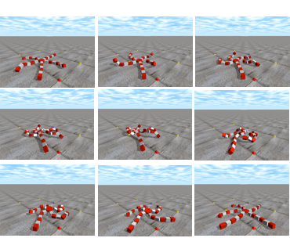
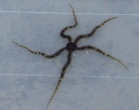
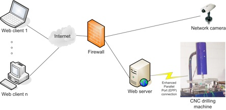
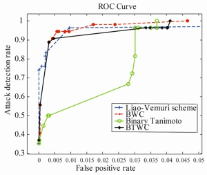
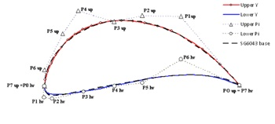
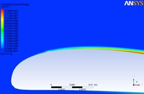
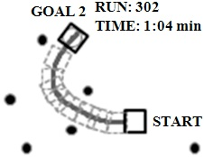
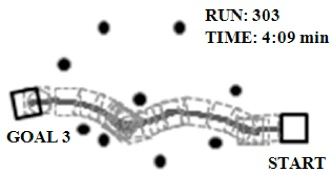
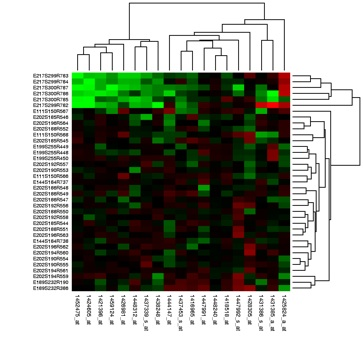

Selected research projects
Given a system consisting of homogenous sub-systems with a set of behavior and constraints, we were interested in knowing how the interaction of the sub-systems can lead to emergence of system level behavior. In particular we considered the brittle star typed robot as a highly nonlinear dynamic control system, which is composed of homogenous modules (sub-systems). Each module incorporated an onboard micro controller for governing the behavior of the module, actuator for inducing motion, and touch sensors for feeling the environment. In this research we drew inspiration from emergent structures in nature and developed novel computational models for the motion control of the modular robot. Specifically, we leveraged off finite state machine, cellular automaton, and neural networks in developing novel motion control models. The optimal parameters for these models were evolved using genetic algorithm. In this research we were able to successfully combine the intrinsic behaviors to produce a desired global behavior, which resulted in a coherent motion of the robot. A robust simulation platform using open dynamics engine was developed in C++, which enabled us to leverage off evolutionary computation to train the robot, and automatically generate low-level code for the 31 Basic Stamp micro controllers in the entire robot.


Brittle star, the marine organism
Evolution of motion control using Open Dynamic Engine
Robot in motion
As part of this research, a three-tiered web-based manufacturing system was developed as a means of harnessing the power of the Internet to enable collaborative manufacturing in a setup where the key components such as the human resource personnel and the manufacturing equipment are geographically separated. The e-manufacturing system developed features platform independent and cost effective means of securely tele-operating a 3-axis computer numerically controlled drilling machine, as well as providing an infrastructure to allow remote manufacturers to collaborate on product design and monitor the machining process in real time. The web-based interface designed using Java applets provided seamless integration to machining application through Common Gateway Interface (CGI). The framework rests on sound security foundation implemented using technologies such as firewall, authentication modules and transport layer security (TLS) protocol to promote safe usage of the drilling machine. Our system performed very well as it was able to achieve fairness in handling multiple possibly concurrent users, and was highly responsive in terms of negligible processing delays.

Intrusion detection is an important area in the field of computers and security, and in the recent years it has generated considerable interest in the research community. The intrusion detection system (IDS) can be subdivided into two main categories namely, signature-based detection and behavior-based detection. In this research we focus on behavior-based detection which is also known as anomaly detection. An important feature of anomaly detection is that it can detect unknown attacks. Behavior modeling can be done by either modeling the user-behavior or process. The system call data is one of the most common types of data used for modeling process behavior. Host-based anomaly detection systems mostly focus on system call sequences with the assumption that a malicious activity results in an abnormal trace. Such data can be collected by logging the system calls using operating system utilities e.g. Linux strace or Solaris Basic Security Module (BSM). In this framework, it is assumed that the normal behavior can be profiled by a set of patterns of sequence of system calls. Any deviation from the normal pattern is termed as intrusion in this framework. An intrusion detection system needs to learn the normal behavior patterns from the previously collected data and this is normally accomplished by data mining or machine learning techniques. The problem of intrusion detection thus boils down to a supervised classification problem to identify anomalous sequences, which are measurably different from the normal behavior. Using k-nearest neighbor (kNN) classifier with Tanimoto similarity measure, we were able to classify attacks on the DARPA 1998 database with 3.7% false positive rate at the detection rate of 100%. To the best of our knowledge the performance of the proposed technique in this research was better than any previously documented result using binary similarity measure.

In an online learning environment monitoring the progress of students especially in a large class (MOOCs) is a challenge. At University of the South Pacific we use moodle as the learning management system. In this research project we train a neural network classifier by memetic algorithm using moodle log data of past courses. The trained network is then applied on the current course to classify students who are in danger of failing the course half way into the semester. This work has resulted in the development of early warning system in moodle, which is currently being piloted by our faculty to identify needy students, such that remedial assistance can be offered in a timely manner.
Conceptual framework of the three-tiered manufacturing system
kNN with binary Tanimoto similarity measure outperforms other binary similarity schemes
With rapidly increasing fuel prices and demand for energy, the South Pacific is looking at a possible energy crisis if it does not initiate R & D of renewable energy devices. One of the more mature technologies in renewable energy is wind energy. The South Pacific Islands have a unique challenge in that most of the populations are spread across the ocean in hundreds of islands. While mega-watt class hydro and wind installations can cater for main islands and population centers, small wind turbines (SWT) are a perfect solution for outer island usage. SWTs range from a few watts to a 100 kW. This scale allows the use of SWTs as village or community power sources and even allows integration into national grids. SWTs can also be mounted on buildings and near homes for personal or mini-grid applications. They are easy to maintain and bring down in times of hurricanes. In this research we focus on optimizing the design of airfoil for small wind turbines using genetic algorithm integrated with XFOIL, which is an open source flow solver. The objective of the airfoil design is to maximize the lift while minimizing the drag at different air speeds. The optimized blade profile has been fabricated in house, and wind tunnel tests show better results than conventional airfoils.


Airfoil profile parameterized by composite Bezier curves is evolved by Genetic Algorithm



Architecture of the robot’s behavior-based cooperative controller
In this research we tackle the problem of cooperative transportation of an object by a team of homogenous robots operating under decentralized control system. The robots rely on social mediation to negotiate between obstacles and reach for the target. The low-level controller uses fuzzy logic to smoothen the noise in the heading angle determined by a group of neighboring robots. Simulations using Bullet (physics simulator) indicate that our system is scalable and robust in light of certain failures. Future research work will implement the distributed control algorithm on a group of Lego robots.
Obstacle avoidance while the team of robots is transporting the payload

Heat map is used for depicting expression levels of genes
Early detection of cancer is very important factor, which influences the treatment option, and subsequent prognosis. There are certain types of cancers, which are difficult to distinguish using clinical means, such as light microscopy. Recent advances in oncology rely on gene expression profiling using cDNA microarrays for simultaneous analysis of multiple markers, which can be used to categorize cancers into subgroups. Gene expression profiling is a technique used in molecular biology to query the expression of thousands of genes simultaneously. In this research we use gene expressions represented in the microarray data to accurate classify cancerous tumors. In particular we have developed a novel gene masking approach using genetic algorithm to effectively reduce the genes for classification. We have achieved a gene reduction from 2308 genes to 13 genes with 100% classification accuracy on the small blue round cell tumor (SBRCT) dataset using the combination of genetic algorithm with the nearest shrunken centroid classifier.